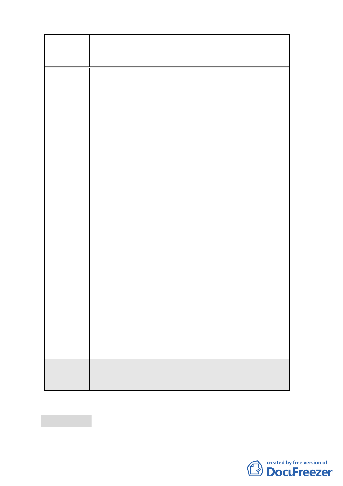

案名
委員會
決議
變更臺北市南港車站特定專用區部分特定商業區及
部分體育場用地為道路用地暨修訂土地使用管制規
定計畫案
更多都市開放空間外，亦可作為本計畫基地內地下停
車空間之進出口安排，所以在考量山坡地安全之同
時，考慮將此留設防災緩衝空間兼做為道路車行服務
與逃生避難疏散之用，除了可維持原計畫目的外，亦
有利於都市交通、都市環境及建築發展之需要。然在
加強既有邊坡表面之綠覆植生保護部份；建議﹙七﹚
基地安全防護第 3 點對防災緩衝空間之綠覆率規定
是否酌予調降，該防災緩衝空間並得比照「附件：修
訂後台北市南港車站特定專用區都市設計管制要點」
之第二條計畫區內管制事項第﹙四﹚項之景觀綠化原
則「1.本計畫區內之建築物、法定空地及依本要點規
定留設之公共開放空間應予綠化，其綠化規定依『台
北市建築物暨法定空地綠化實施要點』辦理。2.本計
畫區內之綠地每滿 64 平方公尺，栽植喬木一棵，且
應以有花期可供觀賞、枝葉密度較疏之終年長綠喬木
為原則」等之規定，以及依照台北市綜合設計公共開
放空間設置及管理維護要點第六點「公共開放空間之
設施基準規定如左：（一）面臨道路留設之公共開放
空間不得設置欄柵、土丘等障礙物，避免影響公眾使
用之便利性。但得設置花台或灌木樹叢，其花台高度
不得高於 45 公分，灌本樹叢不得高於 100 公分，並
應至少保持該面臨道路長度 3 分之 1 為無障礙出入空
間且其寬度最小不低於 4 公尺。（五）公共開放空間
之植被、植栽穴與土壤裸露處，應做防止土壤沖刷流
失之處理。（六）公共開放空間臨 2 條道路境界線交
角 10 公尺範圍內，植栽之灌木高度不得高於道路路
面 80 公分，喬木樹冠底部距地平面淨高不得低於 3
公尺，並不得遮擋交通設施號誌」等規定辦理。
本案除特定商業區（A）建蔽率及最小建築基地規模
應依決議辦理，部分文字誤繕應予更正外，其餘依市
府公展計畫書圖內容通過。
討論事項 三
案名：擬定臺北市文山區木柵路一段中興山莊附近地區細部計畫案
11